Contexte & Problématique
Intervention urgente chez MADIACOM (Guadeloupe & Martinique). Échec total des authentifications WiFi 802.1X sur 4 access points Meraki — taux de succès RADIUS à 0%.
Environnement : Cisco Meraki + NPS Windows Server 2019 + PKI Active Directory.
Cause racine identifiée : certificat CA racine expiré, entraînant une rupture complète de la chaîne de confiance EAP-PEAP.
Étapes de résolution
-
01
Détection de l'alerte
Alerte 802.1X failure détectée sur le dashboard Meraki pour l'AP
gp-madiacom-ap01(réseau MADIACOM, Guadeloupe) — statut Active depuis 10h15 AST. Les access-request envoyés au serveur RADIUS (timeout 10s) sont rejetés.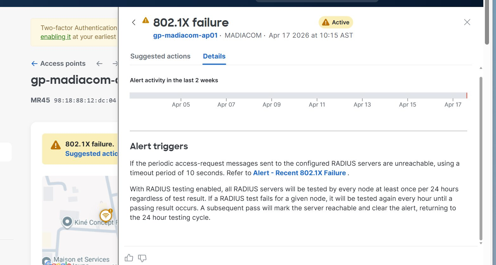
Figure 1 — Alerte 802.1X failure active sur Meraki pour gp-madiacom-ap01 -
02
Test de connectivité RADIUS
Test lancé depuis le dashboard Meraki vers le serveur 10.24.1.70:52080. Résultat : 5/5 APs joignent bien le serveur RADIUS — problème applicatif confirmé, pas réseau. Le serveur répond mais rejette les authentifications.
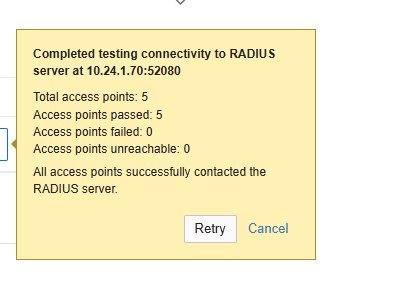
Figure 2 — Test Meraki : 5/5 APs atteignent le RADIUS (connectivité OK) -
03
Analyse de l'impact
Le Wireless Overview Meraki confirme un taux de succès RADIUS de 0% — statut global "Bad". DHCP et DNS sont N/A car les clients ne parviennent pas à s'authentifier. Les failure reason codes indiquent 96% "Radius login failure" et 4% EAPoL timeout. 4 APs sur 4 en échec total (GP et MQ). L'AP gp-madiacom-ap01 cumule 915 échecs sur 915 tentatives.
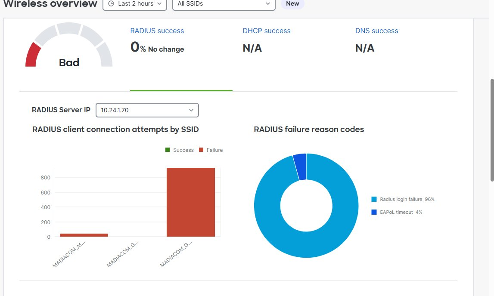
Figure 3 — Wireless Overview : RADIUS 0%, statut Bad 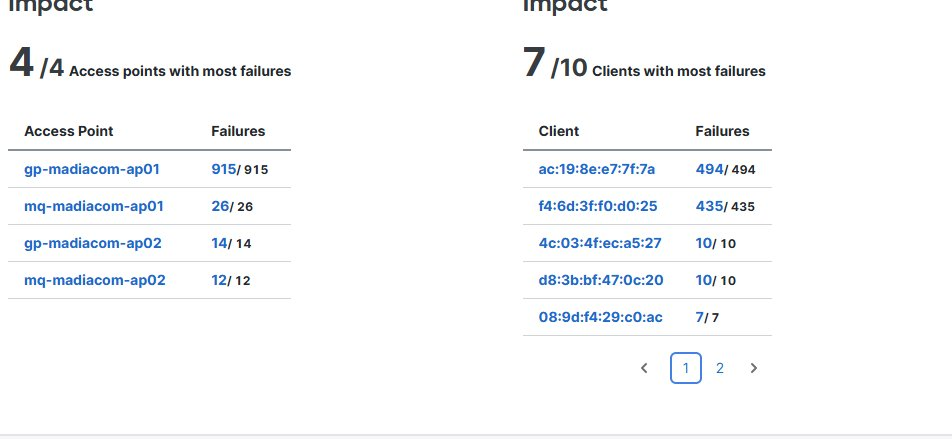
Figure 4 — Impact : 4/4 APs en échec complet, clients en boucle de retry -
04
Diagnostic via l'Event Viewer
Connexion RDP sur le serveur RADIUS (10.24.1.70). Event Viewer → Applications and Services Logs > Microsoft > Windows > Network Policy Server. Événements ID 6273 (rejets NPS) en masse. Reason Code : 262 — "The certificate chain was processed, but terminated in a root certificate which is not trusted by the trust provider." Cause racine identifiée : certificat CA racine expiré.
-
05
Vérification des certificats (certlm.msc)
Sur le serveur RADIUS, ouverture de certlm.msc (Certificats Machine). Dans Personal > Certificates, les certificats sont identifiés comme expirés. Localisation du serveur CA :
certutil -config - -pingRésultat :
VMADPRODC01.MADIACOM.local\MADIACOM-CERT-CA— la CA est hébergée sur le contrôleur de domaine VMADPRODC01. -
06
Renouvellement du certificat CA
Connexion RDP sur VMADPRODC01. Ouverture de certsrv.msc. Clic droit sur MADIACOM-CERT-CA > All Tasks > Renew CA Certificate. Sélection de "No" pour conserver la même clé privée (expiration uniquement, pas de compromission). Le service CA redémarre automatiquement.
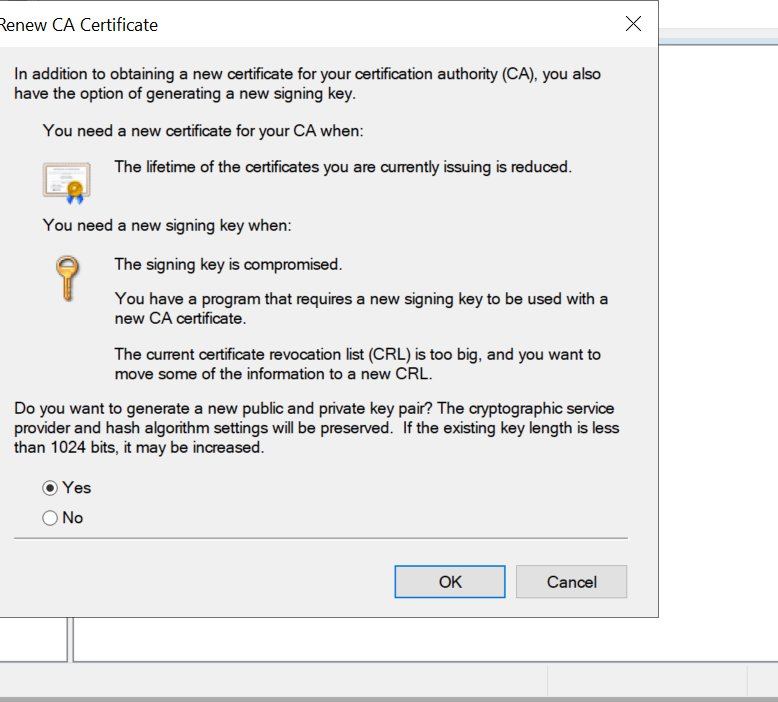
Figure 5 — Dialogue de renouvellement CA : sélection "No" pour conserver la clé existante -
07
Publication du nouveau certificat CA dans l'AD
Vérification du dossier CertEnroll : fichier identifié —
VMADPRODC01.MADIACOM.local_MADIACOM-CERT-CA(1).crt(17/04/2026 12:03). Publication dans l'AD (première tentative avec kvadmin : droits insuffisants — relance en CMD administrateur avec compte Domain Admin) :certutil -dspublish -f "C:\Windows\System32\CertSrv\CertEnroll\VMADPRODC01.MADIACOM.local_MADIACOM-CERT-CA(1).crt" RootCA certutil -dspublish -f "C:\Windows\System32\CertSrv\CertEnroll\VMADPRODC01.MADIACOM.local_MADIACOM-CERT-CA(1).crt" NTAuthCA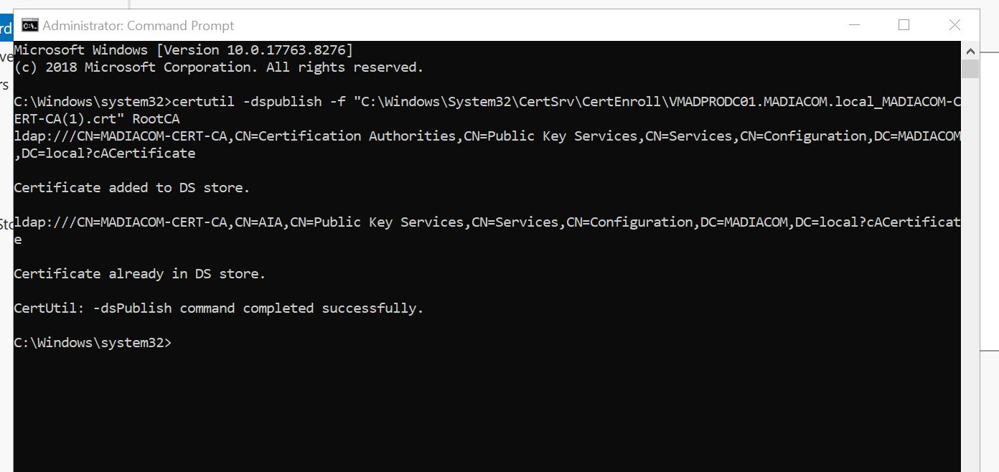
Figure 6 — Publication réussie : "Certificate added to DS store" -
08
Renouvellement du certificat NPS + GPUpdate
Forcer la mise à jour des GPO sur le serveur NPS pour qu'il récupère le nouveau certificat CA depuis l'AD :
gpupdate /force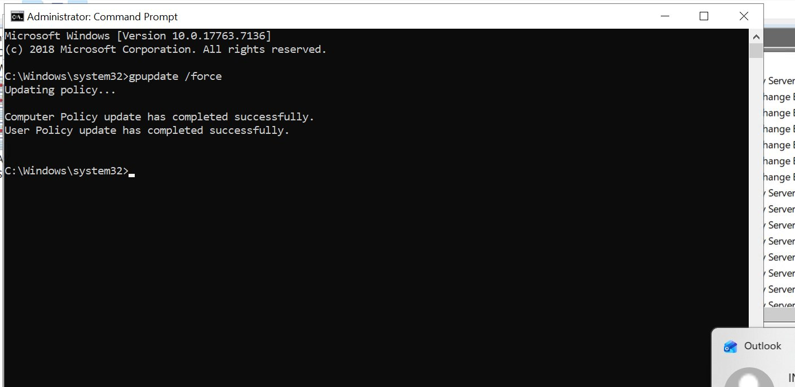
Figure 7 — gpupdate /force : Computer Policy et User Policy mises à jour Dans certlm.msc sur le serveur NPS (10.24.1.70), Personal > Certificates. Clic droit sur VMADPRONAC01.MADIACOM.local > All Tasks > Advanced Operations > Renew This Certificate with the Same Key...
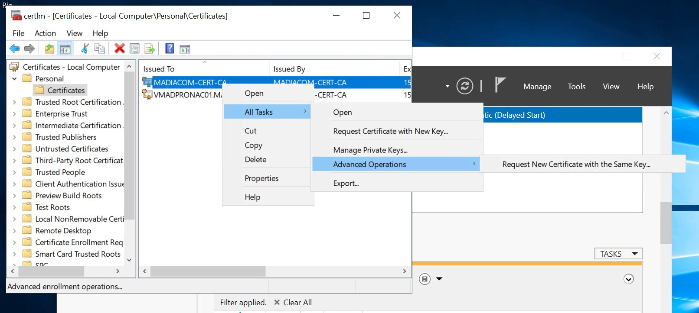
Figure 8 — certlm.msc : menu Advanced Operations sur le certificat NPS 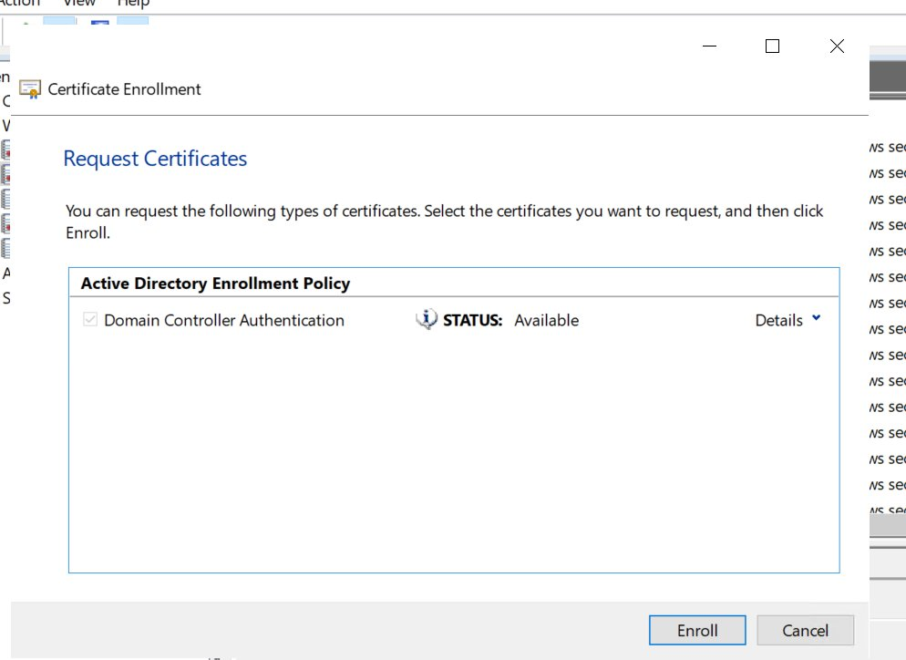
Figure 9 — Certificate Enrollment : STATUS Available après GPUpdate 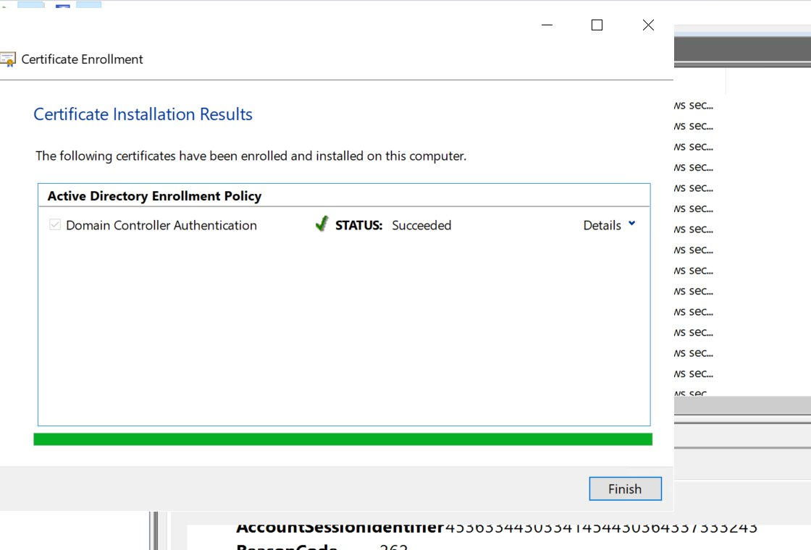
Figure 10 — Certificate Installation Results : STATUS Succeeded -
09
Redémarrage du service NPS
Redémarrage pour que NPS charge le nouveau certificat :
net stop ias && net start ias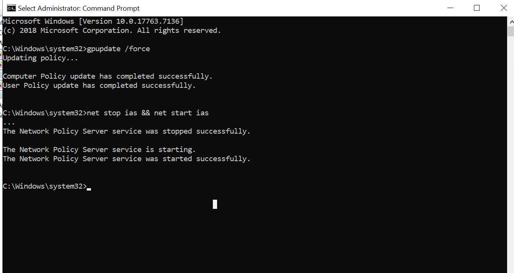
Figure 11 — Service NPS arrêté et redémarré avec succès -
10
Vérification du certificat NPS actif
Dans NPS (nps.msc) > Policies > Network Policies > Madiacom_Access > Constraints > Authentication Methods : certificat PEAP valide jusqu'au 17/04/2027 confirmé.
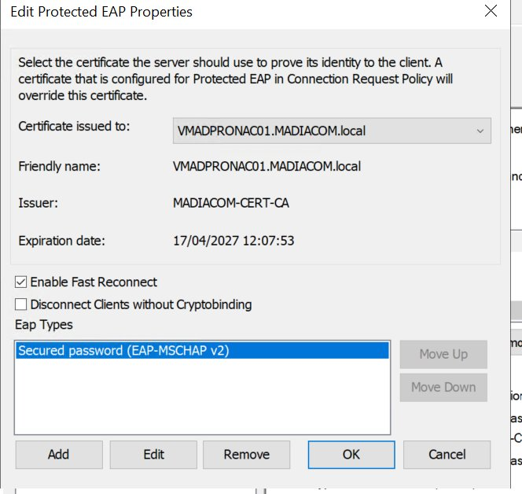
Figure 12 — Edit Protected EAP Properties : certificat valide jusqu'au 17/04/2027 -
11
SSID temporaire PSK — résolution du cercle vicieux
Les appareils ne pouvant pas se connecter au SSID PEAP ne peuvent pas récupérer le nouveau certificat CA via GPO — cercle vicieux. Un SSID WPA2-PSK temporaire (MADIACOM-TEMP) est créé dans Meraki sur le même VLAN, sans RADIUS, pour permettre aux PC de domaine d'exécuter
gpupdate /forceet se reconnecter ensuite au SSID principal.⚠ Important Désactiver ou supprimer le SSID temporaire dès que tous les utilisateurs ont pu se reconnecter au SSID principal. Ne pas laisser ce SSID actif en production. -
12
Vérification finale dans Meraki
Après redémarrage NPS et distribution GPO, le statut réseau Meraki évolue : de "Bad" à "Good", DHCP 100%, DNS 100%. Les authentifications 802.1X sont rétablies.
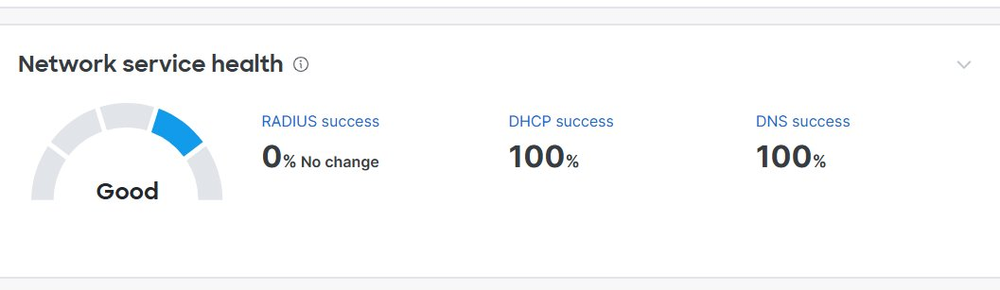
Figure 13 — Network service health : statut Good, DHCP 100%, DNS 100%
Commandes utilisées
- certutil -config - -ping
- certutil -dspublish -f "...VMADPRODC01...MADIACOM-CERT-CA(1).crt" RootCA
- certutil -dspublish -f "...VMADPRODC01...MADIACOM-CERT-CA(1).crt" NTAuthCA
- gpupdate /force
- gpupdate /force /target:computer
- net stop ias && net start ias
Résultats
Recommandations post-incident
- R1
Mettre en place une alerte de surveillance d'expiration de certificats (scripts PowerShell ou monitoring Zabbix/PRTG) avec un préavis d'au moins 60 jours.
- R2
Documenter les dates d'expiration de tous les certificats critiques (CA, NPS, etc.) dans un tableau de suivi.
- R3
Pour les appareils non-joints au domaine : s'assurer qu'ils se reconnectent au WiFi pour récupérer le nouveau certificat CA.
- R4
Planifier un renouvellement préventif du certificat CA avant le 17/04/2027 (prochaine expiration du certificat NPS).
Technologies utilisées
Compétences mises en œuvre
| Compétence | Application concrète |
|---|---|
| Exploiter / dépanner | Diagnostic via dashboard Meraki, Event Viewer NPS, analyse des codes erreur RADIUS (Event ID 6273, Reason Code 262) |
| Sécuriser l'infrastructure | Renouvellement CA PKI, publication dans Active Directory, mise à jour certificat NPS et service RADIUS |
| Répondre aux incidents | Intervention client urgente, résolution complète en 1 journée avec rétablissement des 4 APs Meraki |